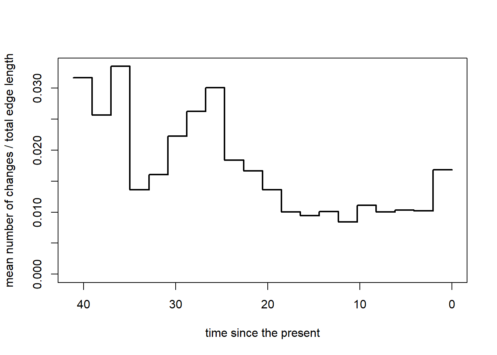
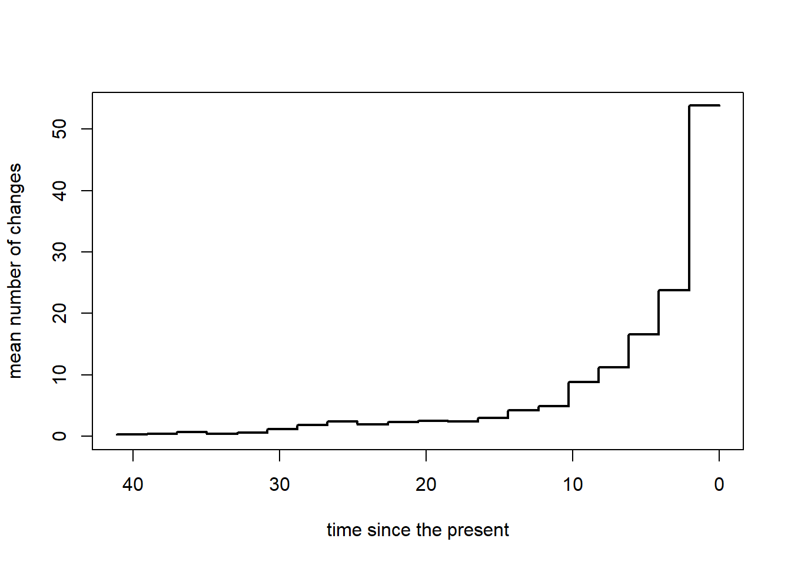
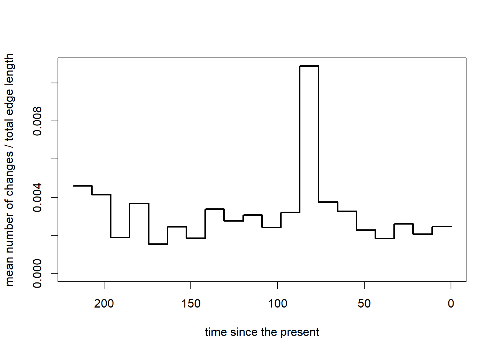
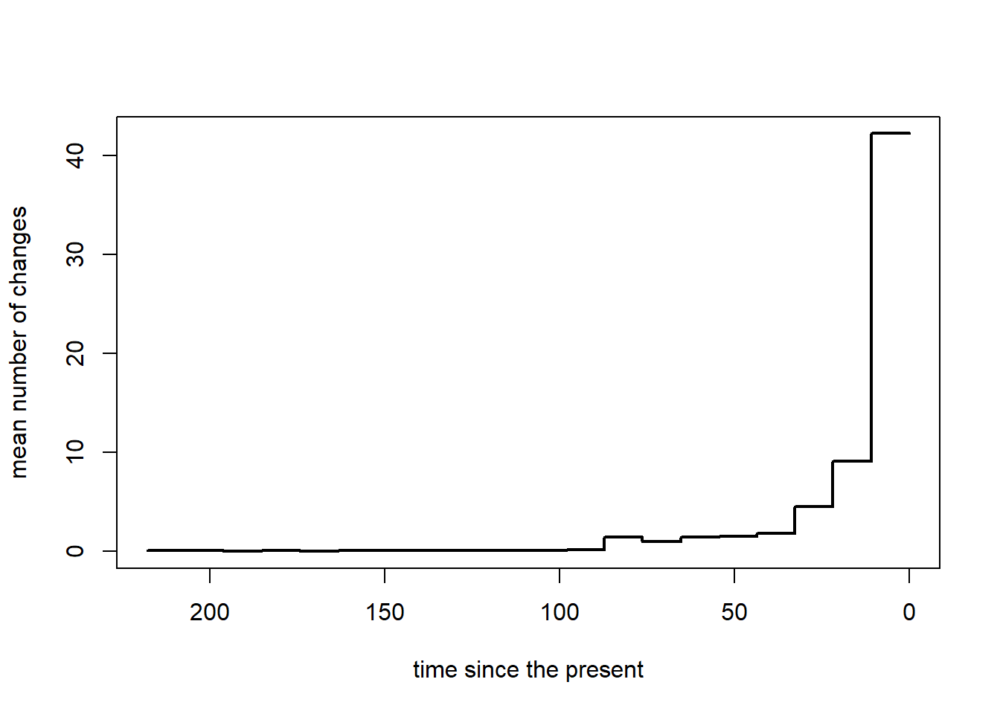

# Clean environment:rm(list=ls())# Libraries:library(phangorn) # to compute MCC tree
Loading required package: ape
library(evobiR) # reorder data by tree
Attaching package: 'evobiR'
The following object is masked from 'package:phangorn':
AICc
library(phytools) # v. ‘1.9.16’ for phylo stuff
Loading required package: maps
library(dplyr) # for data handling
Attaching package: 'dplyr'
The following object is masked from 'package:ape':
where
The following objects are masked from 'package:stats':
filter, lag
The following objects are masked from 'package:base':
intersect, setdiff, setequal, union
library(evobiR) # v. ‘1.1’ To reorder data based on treelibrary(geiger) # v. ‘2.0.11’ for Mk Modelslibrary(tictoc) # for time measurements of computationslibrary(tidyr) # data handlinglibrary(ggplot2) library(prettyGraphs) # for transparancy settings while plotting
1. & 2. in Script: 1_CumulativeRates.qmd
A) Legumes
3. Relative Transition rates
this part runs a while.. the loop takes about 22 minutes.
Adaptation of ctt function (in loop, save to list)
tic( "loop")rm(list=ls())mtrees <-readRDS("../output/RDS/legumes_mtrees_multiSimmap.rds")### Required function ========================================================================== #getChanges<-function(tree){ states<-sort(unique(getStates(tree))) nc<-sapply(tree$maps,length)-1 b<-which(nc>0) nc<-nc[b] xx<-vector() H<-nodeHeights(tree)for(i in1:length(b)){for(j in1:nc[i]){ ss<-names(tree$maps[[b[i]]])[j+1] x<-rep(H[b[i],1]+cumsum(tree$maps[[b[i]]])[j],2) xx<-c(xx,setNames(x[1],paste(names(tree$maps[[b[i]]])[j:(j+1)],collapse="->"))) } } xx}# ============================================================================================= ## Create a function to find the segment ID for a given time value:# ============================================================================================= #find_segment_id <-function(time) { segment_indices <-cut(time, breaks = segs_df[, 2], labels =FALSE)return(segs_df$segsID[segment_indices])}## ============================================================================================= ## ================================================================= ## Working the multiSiammp# ================================================================= ## Get all changes from all simulations so that we can loop through them: changes <-sapply(mtrees, getChanges) # Transform the original changes list of matrices from sapply() for all simulations to dataframe # add trans_no to each transition based on grouping by transition # (i.e, there are two trans_no = 1, one for each transition type) i_changes_list <-list() for (i in1:length(changes)) { i_changes <- changes[[i]] # for each simulation from multiSimmap# extract transition types and times and assign ID column for simmap simulation i_changes_df <-data.frame(transition =names(i_changes), time = i_changes, N_sim = i) i_changes_df$transition <-as.factor(i_changes_df$transition)# Add trans_no to each transition from a group (transition type) i_changes_df <- i_changes_df %>%arrange(time) %>%group_by(transition) %>%mutate(trans_no =row_number()) i_changes_list[[i]] <- i_changes_df }# Final Table without edge.lengths: changes_table <- plyr::rbind.fill(i_changes_list, fill=T) changes_table_wo_edge <- changes_table# ====================================================================================================== ### Step 1: Loop over each simulation and extract # - breaks for segments# - edge.lengths# - rates for each character state transition# ====================================================================================================== #object_list <-list()rates_list <-list()# First Level of the loop for (Nsimulation in1:100){ # ====================================================================================================== ## Setting global variables for the Analysis# ====================================================================================================== ## set the number of time-segments for which everything will be calculated: b <-20# reduce to one tree to extract parameters from each simulation separately: tree <-as.phylo(mtrees[[Nsimulation]])# extract time since root h <-max(nodeHeights(tree))# calculate the time segments based on time since the origin and the time segments that were set by the user segs <-cbind(seq(0,h-h/b,h/b),seq(1/b*h,h,h/b))# ====================================================================================================== ## Transitions & Timing (getChanges)# ====================================================================================================== ## ================================================================= ## Working changes from each simmap simulation separately:# ----------------------------------------------------------------- ## Changes per Segments:# ================================================================= ## Loop through all changes & Calculate average number of changes per time interval (segs; set with "b") nchanges<-rep(0,b)for(i in1:length(changes)) { # loop through all simulations from simmap # loop through all individual changes from one simmap simulation and calculate relative changes per time segment# nchanges = collects the relative number of changes (of all changes) per segmentfor(j in1:length(changes[[i]])) { ind<-which((changes[[i]][j]>segs[,1])+ (changes[[i]][j]<=segs[,2])==2) nchanges[ind]<-nchanges[ind]+1/length(changes) } # closing of 2nd level } # closing of 1st levelrm(i,j) # ================================================================= ## Working changes from each simmap simulation separately:# ----------------------------------------------------------------- ## Edge Lengths per Segments:# ================================================================= ## Edge.Lengths = Number of species in the phylogeny per time slot (increases naturally with time)# ! Note: has to be accounted for when showing transition rates# Here we calculate edge lengths for each segement separatly:# -------------------------------------------------------------------------------------------------------- ## Compute Lineages-Through-Time with ltt() function from the phytools package to extract edge.lengths from LTT <-ltt(tree,plot=FALSE)# transform LTT data so that we can use it: LTT <-cbind(LTT$ltt[2:(length(LTT$ltt)-1)], # Number of species at each node minus the root LTT$times[2:(length(LTT$ltt)-1)], # "start" time for each node minus the root LTT$times[3:length(LTT$ltt)]) # "end" time for each node minus the root# -------------------------------------------------------------------------------------------------### Now we loop through all segments to extract matching edge.lengths =================================== ## set count variable: ii<-1# Create an empty vector to store edge lengths edge.length <-rep(0, nrow(segs))# 2nd level loop: # (for one tree because LTT is calculated for one tree)for (i_segs in1:nrow(segs)) {# Find the indices of LTT segments that overlap with the current segs segment overlap_indices <-which(LTT[, 2] <= segs[i_segs, 2] & LTT[, 3] >= segs[i_segs, 1])# Calculate edge length for the current segs segment using vectorized operations# 3rd level loop: for (ii in overlap_indices) {# edge.length should contain the edge lengths for all segments: edge.length[i_segs] <- edge.length[i_segs] + LTT[ii, 1] *# counts number of lineages between time intervals (min(segs[i_segs, 2], LTT[ii, 3]) -# end time intervalmax(segs[i_segs, 1], LTT[ii, 2])) # start time interval } # 3rd level closing } # 2nd level closing edge.length_backup <- edge.length edge.length <-c(1, edge.length)# edge.length should contain the edge lengths for all segments in a given simulation# adding segsID coulmn to edge lengths: edge.length_df <-data.frame(edge.length = edge.length, segsID =seq(1,b+1))# ================================================================= ## Working the multiSimmap:# ----------------------------------------------------------------- ## Edge Lengths at each transition event# ================================================================= ### Adapted code from the segments (above) by Frieda# we need the table for all simmaps: changes_table so that we can loop through it# set count variable: ii<-1# Create an empty vector to store edge lengths edge.length_transitions <-rep(0, nrow(changes_table)) edge.lengths_all <-list() changes_times <- changes_table$time# 2nd level loop: # (for one tree because LTT is calculated for one tree)for (i_changes in1:nrow(changes_table)) {# Find the indices of LTT segments that overlap with the current segs segment# "which start times of the Lineages are smaller or equal to the time the change happened and which end times of the lineages are larger or equal to the time the change happend."# --> this gives the node numbers that were there when the transition happend overlap_indices <-which(LTT[, 2] <= changes_times[i_changes] & LTT[, 3] >= changes_times[i_changes])# Calculate edge length for the current segs segment using vectorized operations# 3rd level loop: for (ii in overlap_indices) { # ii = number of lineages when a transition occurred# edge.length should contain the edge lengths for all segments: edge.length_transitions[i_changes] <- edge.length_transitions[i_changes] + LTT[ii, 1] edge.length_transitions2 <-data.frame(time = changes_times[i_changes], edge.length = edge.length_transitions[i_changes]) edge.lengths_all[[i_changes]] <- edge.length_transitions2 } # 3rd level closing } # 2nd level closing edge.lengths_all_df <- plyr::rbind.fill(edge.lengths_all) changes_table_w_edge <-merge(changes_table_wo_edge, edge.lengths_all_df, by ="time")# Write to file (once is enough)write.csv(changes_table_w_edge, "../output/CSV/Legumes_changes_table_w_edgelengths.csv")# ============================================================================================= ## Create a dataframe with transitions, times, edge.lengths, segment IDs.# ============================================================================================= ### We are here = first level loop: along simulations# Again extract changes for each simulation separately: current_simulation <-as.data.frame(changes[[Nsimulation]], row.names =names(changes[[Nsimulation]]))names(current_simulation) <-c("time") current_simulation$transition <-rownames(current_simulation) current_simulation$N_sim <- Nsimulation current_simulation <- current_simulation %>%arrange(time) current_simulation$IDtransition <-seq(1:nrow(current_simulation))# ============================================================================================= ## Working the segments: # ============================================================================================= ## Create a vector of segment IDs segs_df <-as.data.frame(segs) new_row <-data.frame(V1 =0, V2 =0) # add a row that starts from 0 and ends with 0.. we need this later on for plotting segs_df <-rbind(new_row, segs_df) segs_df$segsID <-seq(1,b+1) # now we can calculate the breaks from it# Use the apply function to find the segment ID for each row in current_simulation current_simulation$segsID <-apply(current_simulation, 1, function(row) { time <-as.numeric(row["time"])return(find_segment_id(time)) }) # closing loop from within the apply-function (2nd level loop closing)# assign edge.length based on segment ID current_simulation <-unique(merge(current_simulation, edge.length_df, by="segsID", all = T))names(segs_df) <-c("segs_start", "segs_end", "segsID") current_simulation <-unique(merge(current_simulation, segs_df, by ="segsID", all = T))# Calculate rate for each simulation: current_simulation_rates <- current_simulation %>%group_by(segsID, N_sim, transition) %>%mutate(Nchanges =length(!is.na(IDtransition))) %>%mutate(rate = Nchanges / edge.length) rates_list[[Nsimulation]] <- current_simulation_rates # we need the rates_list object for plotting (!) object <-list(segments=segs, nchanges=nchanges, edge.length=edge.length[-1], tree=tree)class(object)<-"ctt" object_list[[Nsimulation]] <- object } # 1st level closingtoc() # 1218.6 sec elapsed = 20.3 minclass(object_list) <-"multiCtt"# -------------------------------------------------------------------------------------- ## Make dataframe with rates from the rates_list object for all simulations from the simmap:rates_df <- plyr::rbind.fill(rates_list)# Now set columns: rates, Nchanges to 0 if there was no transition# Calculate the average transition time based on numbered transitions from 100 simmap simulations# set average timing of 0-transition to mean-segment time # then order the dataframe by segment ID:rates_df <- rates_df %>%group_by(N_sim, segsID, transition) %>%mutate(rate =ifelse(is.na(transition), 0, rate), # set transition rates 0 if there was no transitionNchanges =ifelse(is.na(transition), 0, Nchanges), # set Nchanges 0 if there was no transitionsegs_mean = (segs_end+ segs_start)/2) %>%# Adjust the threshold (1e-6) as neededmutate(avg_time =ifelse(Nchanges ==1, time, mean(time))) %>%# set average time = time if there was only 1 changemutate(avg_time =ifelse(is.na(avg_time), segs_mean, avg_time)) %>%# set time to mean time bin if there was no transitionarrange(segsID) %>%unique() save.image("~/GitHub/Evo-Legumes-Herbivory/LegumesArmature/output/RData/Legumes_rates_ws.RData")
This now gives us the object “object_list”, which can be used inside the phytools function plot.multiCtt() to get the overall increases and decreases for the rates (not separated by each rate). We can also plot the rates of each simulation separately using plot.ctt() from phytools Also, we have just created the rates_df for plotting
We can also plot the rates of each simulation separately using plot.ctt() from phytools:
#|label: plot.ctt() functionplot.ctt<-function(x,...){ h<-max(nodeHeights(x$tree)) args<-list(...)if(!is.null(args$type)){ type<-args$type args$type<-NULL } else type<-"rate"if(!is.null(args$show.tree)){ show.tree<-args$show.tree args$show.tree<-NULL } else show.tree<-FALSEif(!is.null(args$add)){ add<-args$add args$add<-NULL } else add<-FALSEif(is.null(args$ylim)) args$ylim<-if(type=="number")c(0,max(x$nchanges)) elsec(0,max(x$nchanges/x$edge.length))if(is.null(args$xlim)) args$xlim<-c(max(x$segments),min(x$segments))if(is.null(args$lwd)) args$lwd<-2if(is.null(args$xlab)) args$xlab<-"time since the present"if(is.null(args$ylab)) args$ylab<-if(type=="number") "mean number of changes"else"mean number of changes / total edge length" args$type<-"l" args$x<-h-as.vector(t(x$segments)) args$y<-if(type=="number") rbind(x$nchanges,x$nchanges) elserbind(x$nchanges/x$edge.length,x$nchanges/x$edge.length)if(!add) do.call(plot,args)elsedo.call(lines,args)if(show.tree) plotTree(x$tree,add=TRUE,ftype="off",lwd=1,color=make.transparent("blue",0.1),mar=par()$mar,direction="leftwards",xlim=args$xlim)}plot.ctt(object_list[[1]], type="rate")

plot.ctt(object_list[[1]], type="number")

2.1. Post-processing of data
To do:
Currently, if there was no transition of a specific type at a specific time, there is no indication of a rate. However, the rate should be zero if there was no transition. In the following code I try to replicate each time segment twice and add transitions for both types with rates == 0.
I’m not done with this yet.
# Replace NAs in Transition types to set the rates to 0 where no transition occurred:rates_df_copy <- rates_df# Replace "NA" with the first transition typerates_df_copy$transition[is.na(rates_df_copy$transition)] <-unique(rates_df_copy$transition)[[2]]# Create a second copy of the data frame with "NA" transitionsrates_df_copy2 <- rates_df# Replace "NA" with the second transition typerates_df_copy2$transition[is.na(rates_df_copy2$transition)] <-unique(rates_df_copy2$transition)[[3]]# Combine the two copies to get the final data frame with replicatesfinal_df <-bind_rows(rates_df_copy, rates_df_copy2)########## ====================================================================================== ##### Specify the transition type for which you want to ensure ratesspecific_transition_type <-unique(rates_df_copy$transition)[[2]]# Generate a data frame with all possible combinations of segsID and the specific transition typeall_combinations <-expand_grid(segsID =unique(final_df$segsID),transition = specific_transition_type)# Left join the generated data frame with the original data framefinal_df1 <- all_combinations %>%left_join(final_df, by =c("segsID", "transition")) %>%mutate(rate =ifelse(is.na(rate), 0, rate))# Generate a data frame with all possible combinations of segsID and the specific transition typeall_combinations <-expand_grid(segsID =unique(final_df1$segsID),transition = specific_transition_type)# Left join the generated data frame with the original data framefinal_df1 <- all_combinations %>%left_join(final_df1, by =c("segsID", "transition")) %>%mutate(rate =ifelse(is.na(rate), 0, rate))########## ====================================================================================== ##### Specify the transition type for which you want to ensure ratesspecific_transition_type <-unique(rates_df_copy$transition)[[1]]# Generate a data frame with all possible combinations of segsID and the specific transition typeall_combinations2 <-expand_grid(segsID =unique(final_df$segsID),transition = specific_transition_type)# Left join the generated data frame with the original data framefinal_df2 <- all_combinations2 %>%left_join(final_df, by =c("segsID", "transition")) %>%mutate(rate =ifelse(is.na(rate), 0, rate))# Generate a data frame with all possible combinations of segsID and the specific transition typeall_combinations2 <-expand_grid(segsID =unique(final_df2$segsID),transition = specific_transition_type)# Left join the generated data frame with the original data framefinal_df2 <- all_combinations2 %>%left_join(final_df2, by =c("segsID", "transition")) %>%mutate(rate =ifelse(is.na(rate), 0, rate))########## ====================================================================================== ##### Sort the data frame if neededfinal_df <- final_df %>%arrange(segsID) # You can specify the sorting order# Now final_df contains rows with "NA" in the "transition" column replaced by two different transition types.ggplot(final_df, aes(y = rate, x = segs_end, fill =factor(transition))) +geom_col(position ="identity")+ylim(0, 0.015)+theme_light()
## below adapted from other script: https://github.com/rubysaltbush/pollination-macroevolution/blob/main/scripts/analysis/simmap.Rarmature_transitions <- rates_dfarmature_transitions$transition <-as.factor(armature_transitions$transition)# build new data frame with cumulative number of transitionsarmature_trans_cumul <-data.frame()for(n in1:100){ trans <- armature_transitions %>%ungroup() %>% dplyr::filter(N_sim == n) %>% dplyr::group_by(transition) %>%arrange(time) %>% dplyr::mutate(trans_no =row_number(N_sim)) armature_trans_cumul <-rbind(armature_trans_cumul, trans)}rm(n, trans)# =========================================================================================================== ## Now we are summarizing over the 100 simulations:# =========================================================================================================== ###### copied from somewhere else in the code from the same script....:# first need to know average number of transitions and across simulations, rounded. trans_avg_length <- armature_trans_cumul %>% dplyr::group_by(transition, N_sim) %>% dplyr::mutate(no_trans =max(trans_no)) %>% dplyr::ungroup() %>% dplyr::filter(trans_no == no_trans) %>% dplyr::group_by(transition) %>% dplyr::mutate(avg_length =round(mean(no_trans), digits =0)) %>% dplyr::select(transition, avg_length) %>% dplyr::ungroup() %>% dplyr::distinct()# now knowing this, can rearrange data and average times and edge.lengths across rowsavg_trans_times <- armature_trans_cumul %>% dplyr::group_by(transition, trans_no) %>% dplyr::mutate(avg_time =mean(time)) %>% dplyr::mutate(SE_time =sqrt(var(time) /length(time)),avg_edge.length =mean(edge.length)) %>%ungroup() %>%group_by(N_sim, segsID, transition) %>%mutate(avg_Nchanges =mean(Nchanges)) %>% dplyr::select(transition, trans_no, avg_time, SE_time, avg_edge.length, avg_Nchanges) %>% dplyr::distinct()
We can also plot the rates of each simulation separately using plot.ctt() from phytools:
#|label: plot.ctt() functionplot.ctt<-function(x,...){ h<-max(nodeHeights(x$tree)) args<-list(...)if(!is.null(args$type)){ type<-args$type args$type<-NULL } else type<-"rate"if(!is.null(args$show.tree)){ show.tree<-args$show.tree args$show.tree<-NULL } else show.tree<-FALSEif(!is.null(args$add)){ add<-args$add args$add<-NULL } else add<-FALSEif(is.null(args$ylim)) args$ylim<-if(type=="number")c(0,max(x$nchanges)) elsec(0,max(x$nchanges/x$edge.length))if(is.null(args$xlim)) args$xlim<-c(max(x$segments),min(x$segments))if(is.null(args$lwd)) args$lwd<-2if(is.null(args$xlab)) args$xlab<-"time since the present"if(is.null(args$ylab)) args$ylab<-if(type=="number") "mean number of changes"else"mean number of changes / total edge length" args$type<-"l" args$x<-h-as.vector(t(x$segments)) args$y<-if(type=="number") rbind(x$nchanges,x$nchanges) elserbind(x$nchanges/x$edge.length,x$nchanges/x$edge.length)if(!add) do.call(plot,args)elsedo.call(lines,args)if(show.tree) plotTree(x$tree,add=TRUE,ftype="off",lwd=1,color=make.transparent("blue",0.1),mar=par()$mar,direction="leftwards",xlim=args$xlim)}plot.ctt(object_list[[1]], type="rate")

plot.ctt(object_list[[1]], type="number")

2.1. Post-processing of data
To do:
Currently, if there was no transition of a specific type at a specific time, there is no indication of a rate. However, the rate should be zero if there was no transition. In the following code I try to replicate each time segment twice and add transitions for both types with rates == 0.
I’m not done with this yet.
# Make dataframe with rates from the rates_list object for all simulations from the simmap:rates_df <- plyr::rbind.fill(rates_list)# Now set columns: rates, Nchanges to 0 if there was no transition# Calculate the average transition time based on numbered transitions from 100 simmap simulations# set average timing of 0-transition to mean-segment time # then order the dataframe by segment ID:rates_df <- rates_df %>%group_by(N_sim, segsID, transition) %>%mutate(rate =ifelse(is.na(transition), 0, rate), # set transition rates 0 if there was no transitionNchanges =ifelse(is.na(transition), 0, Nchanges), # set Nchanges 0 if there was no transitionsegs_mean = (segs_end+ segs_start)/2) %>%# Adjust the threshold (1e-6) as neededmutate(avg_time =ifelse(Nchanges ==1, time, mean(time))) %>%# set average time = time if there was only 1 changemutate(avg_time =ifelse(is.na(avg_time), segs_mean, avg_time)) %>%# set time to mean time bin if there was no transitionarrange(segsID) %>%unique() # Replace NAs in Transition types to set the rates to 0 where no transition occurred:rates_df_copy <- rates_df# Replace "NA" with the first transition typerates_df_copy$transition[is.na(rates_df_copy$transition)] <-unique(rates_df_copy$transition)[[2]]# Create a second copy of the data frame with "NA" transitionsrates_df_copy2 <- rates_df# Replace "NA" with the second transition typerates_df_copy2$transition[is.na(rates_df_copy2$transition)] <-unique(rates_df_copy2$transition)[[3]]# Combine the two copies to get the final data frame with replicatesfinal_df <-bind_rows(rates_df_copy, rates_df_copy2)########## ====================================================================================== ##### Specify the transition type for which you want to ensure ratesspecific_transition_type <-unique(rates_df_copy$transition)[[2]]# Generate a data frame with all possible combinations of segsID and the specific transition typeall_combinations <-expand_grid(segsID =unique(final_df$segsID),transition = specific_transition_type)# Left join the generated data frame with the original data framefinal_df1 <- all_combinations %>%left_join(final_df, by =c("segsID", "transition")) %>%mutate(rate =ifelse(is.na(rate), 0, rate))# Generate a data frame with all possible combinations of segsID and the specific transition typeall_combinations <-expand_grid(segsID =unique(final_df1$segsID),transition = specific_transition_type)# Left join the generated data frame with the original data framefinal_df1 <- all_combinations %>%left_join(final_df1, by =c("segsID", "transition")) %>%mutate(rate =ifelse(is.na(rate), 0, rate))########## ====================================================================================== ##### Specify the transition type for which you want to ensure ratesspecific_transition_type <-unique(rates_df_copy$transition)[[1]]# Generate a data frame with all possible combinations of segsID and the specific transition typeall_combinations2 <-expand_grid(segsID =unique(final_df$segsID),transition = specific_transition_type)# Left join the generated data frame with the original data framefinal_df2 <- all_combinations2 %>%left_join(final_df, by =c("segsID", "transition")) %>%mutate(rate =ifelse(is.na(rate), 0, rate))# Generate a data frame with all possible combinations of segsID and the specific transition typeall_combinations2 <-expand_grid(segsID =unique(final_df2$segsID),transition = specific_transition_type)# Left join the generated data frame with the original data framefinal_df2 <- all_combinations2 %>%left_join(final_df2, by =c("segsID", "transition")) %>%mutate(rate =ifelse(is.na(rate), 0, rate))########## ====================================================================================== ##### Sort the data frame if neededfinal_df <- final_df %>%arrange(segsID) # You can specify the sorting order# Now final_df contains rows with "NA" in the "transition" column replaced by two different transition types.ggplot(final_df, aes(y = rate, x = segs_end, fill =factor(transition))) +geom_col(position ="identity")+ylim(0, 0.015)+theme_light()
## below adapted from other script: https://github.com/rubysaltbush/pollination-macroevolution/blob/main/scripts/analysis/simmap.Rmegaherbivore_transitions <- rates_dfmegaherbivore_transitions$transition <-as.factor(megaherbivore_transitions$transition)# build new data frame with cumulative number of transitionsmegaherbivore_trans_cumul <-data.frame()for(n in1:100){ trans <- megaherbivore_transitions %>%ungroup() %>% dplyr::filter(N_sim == n) %>% dplyr::group_by(transition) %>%arrange(time) %>% dplyr::mutate(trans_no =row_number(N_sim)) megaherbivore_trans_cumul <-rbind(megaherbivore_trans_cumul, trans)}rm(n, trans)# =========================================================================================================== ## Now we are summarizing over the 100 simulations:# =========================================================================================================== ###### copied from somewhere else in the code from the same script....:# first need to know average number of transitions and across simulations, rounded. trans_avg_length <- megaherbivore_trans_cumul %>% dplyr::group_by(transition, N_sim) %>% dplyr::mutate(no_trans =max(trans_no)) %>% dplyr::ungroup() %>% dplyr::filter(trans_no == no_trans) %>% dplyr::group_by(transition) %>% dplyr::mutate(avg_length =round(mean(no_trans), digits =0)) %>% dplyr::select(transition, avg_length) %>% dplyr::ungroup() %>% dplyr::distinct()# now knowing this, can rearrange data and average times and edge.lengths across rowsavg_trans_times <- megaherbivore_trans_cumul %>% dplyr::group_by(transition, trans_no) %>% dplyr::mutate(avg_time =mean(time)) %>% dplyr::mutate(SE_time =sqrt(var(time) /length(time)),avg_edge.length =mean(edge.length)) %>%ungroup() %>%group_by(N_sim, segsID, transition) %>%mutate(avg_Nchanges =mean(Nchanges)) %>% dplyr::select(transition, trans_no, avg_time, SE_time, avg_edge.length, avg_Nchanges) %>% dplyr::distinct()
%20function%20Legumes-1.png)
%20function%20Legumes-2.png)
%20function%20Mammals-1.png)
%20function%20Mammals-2.png)